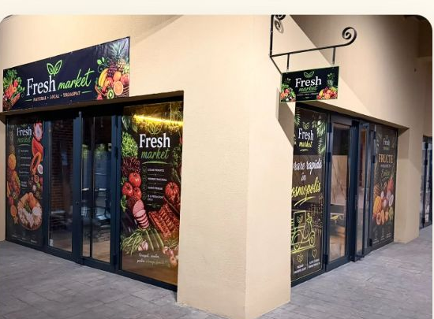

Website & digitaler Katalog
FreshMarket Cosmopolis
Eine Website mit digitalem Katalog und Bestellmöglichkeit über WhatsApp.
Projekt ansehen ↗MMA Tech / Softwareentwicklung
Wir entwickeln Webanwendungen, professionelle Websites und maßgeschneiderte Software für Unternehmen. Von der ersten Idee bis zur langfristigen Betreuung – flexibel und vollständig remote.
01 / Über MMA Tech
Wir entwickeln digitale Lösungen für Unternehmen, die ihre Ideen und Prozesse voranbringen möchten.
MMA Tech ist ein in Rumänien registriertes Unternehmen. Wir arbeiten remote mit Unternehmen, Agenturen und IT-Partnern zusammen – von der Analyse bis zur Weiterentwicklung.
Mehr über uns →02 / Unsere Leistungen
Sechs Leistungsbereiche für neue Ideen, bestehende Anwendungen und digitale Prozesse.
Anwendungen, die Ihre Abläufe und Anforderungen abbilden.
Mehr erfahren →02 / ↗Von professionellen Websites bis zu komplexen webbasierten Anwendungen.
Mehr erfahren →03 / ↗Digitale Abläufe verbinden Informationen und entlasten bei wiederkehrenden Aufgaben.
Mehr erfahren →04 / ↗Bestehende Anwendungen weiterentwickeln und Systeme sinnvoll verbinden.
Mehr erfahren →05 / ↗Technische Betreuung für Anwendungen, die mit Ihrem Unternehmen wachsen.
Mehr erfahren →06 / ↗Technische Entscheidungen auf einer klaren Analyse aufbauen.
Mehr erfahren →03 / Warum MMA Tech?
Individuelle Anforderungen verdienen eine Lösung, die fachlich und technisch zusammenpasst.
Entwicklung entlang Ihrer Ziele und Prozesse.
Erfahrung in Softwareentwicklung und Webanwendungen.
Ein Vorgehen, das sich an Projekt und Bedarf orientiert.
Klare Abstimmung über Anforderungen und nächste Schritte.
Wartung und Weiterentwicklung über die Umsetzung hinaus.
Digitale Abstimmung unabhängig vom Standort.
04 / Technologien & Kompetenzen
Die Technologieauswahl richtet sich nach den Anforderungen des Projekts.
Java · C# · .NET · ASP.NET · REST API
Angular · TypeScript · JavaScript · HTML5 · CSS3
SQL Server · SQL · Relationale Datenbanken
Git · CI/CD · Softwarearchitektur · Code Review · Agile Entwicklung
05 / Referenzprojekte
Zwei Beispiele für digitale Unternehmensauftritte und nutzerorientierte Weblösungen.

Website & digitaler Katalog
Eine Website mit digitalem Katalog und Bestellmöglichkeit über WhatsApp.
Projekt ansehen ↗
Website & Portfolio
Eine Website mit Portfolio und Kontaktanfrage.
Projekt ansehen ↗06 / So arbeiten wir
07 / B2B-Partnerschaften
Sie suchen Unterstützung für ein Softwareprojekt?
Wir arbeiten mit IT-Unternehmen und digitalen Agenturen an der Entwicklung oder Erweiterung von Anwendungen. Aufgaben, Schnittstellen und Zusammenarbeit stimmen wir gemeinsam auf das Projekt ab.
Zusammenarbeit besprechen →Ihr nächster Schritt